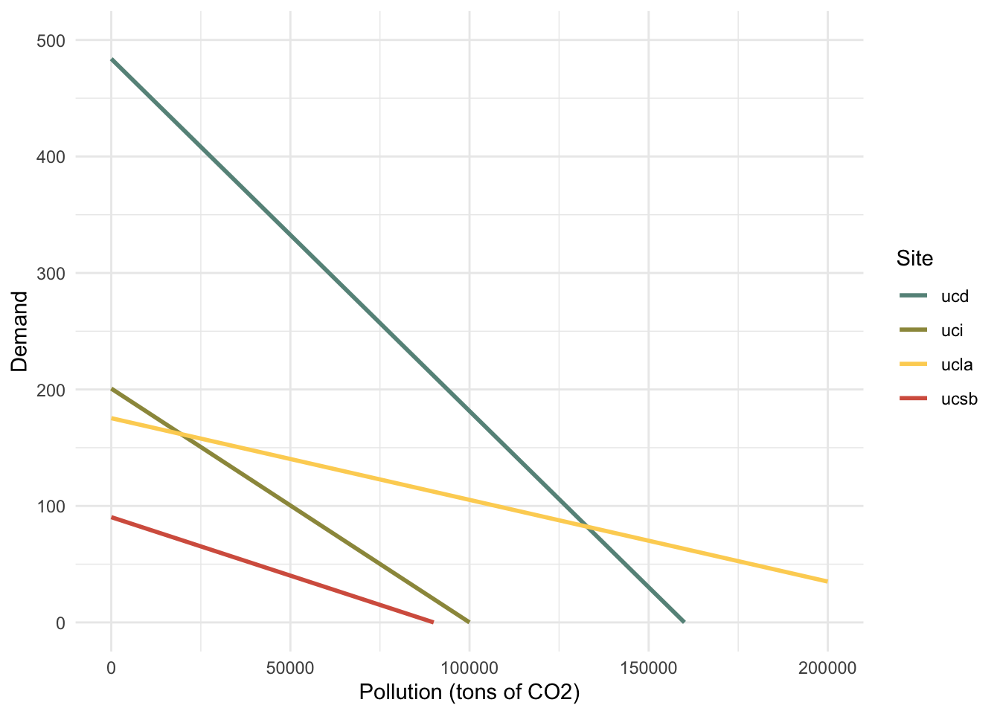

knitr::opts_chunk$set(echo = TRUE, warning = FALSE, message = FALSE, results = TRUE)
library(tidyverse)
library(here)
library(janitor)
library(dplyr)
library(ggpubr)
library(patchwork)
library(cowplot)
library(equatiomatic)
library(pracma)
library(purrr)
library(wesanderson)ESM204_a2
Simulating Carbon Abatement
In this assignment, we simulate alternative approaches for reducing carbon emissions among four UC campuses (UCSB, UCLA, UCI, and UCD). We begin with a data set that contains estimates of the marginal cost of reducing carbon emission for each campus for different levels of abatement (in tons of carbon). Note that current (i.e. baseline) emission for each campus are:
UCSB = 90,000 tons
UCLA = 250,000 tons
UCI = 100,000 tons
UCD = 160,000 tons
#import data and pivot longer
emissions = read_csv(here::here("a2","CarbonUC.csv")) %>%
janitor::clean_names() %>%
pivot_longer(cols = ucsb:ucd, names_to = "site", values_to = "mac")
#define baseline emissions for each campus (all in tons)
ucsb_baseline = 90000
ucla_baseline = 250000
uci_baseline = 100000
ucd_baseline = 160000Part 1. Marginal Abatement Cost Curves
First, we plotted the marginal abatement cost (MAC) against the abatement, or emissions reduction, data from the initial data set. Then, we estimated a linear regression model with a zero intercept for each campus; the resulting marginal abatement cost curve equation for each campus is shown below.
#plot marginal abatement curves
plot_1 =
ggplot(emissions, aes(x = abatement, y = mac, color = site)) +
geom_jitter() +
geom_smooth() +
#geom_abline(slope = ucsb_slope)+
#scale_colour_manual(values = c("#679289","#9C964A","#FDD262","#D6604D")) +
scale_color_manual(values= wes_palette("GrandBudapest1", n = 4)) +
labs(title = "Marginal Abatement Cost Curves for UC Campuses", y = "Marginal Abatement Cost ($/ton of carbon)", x = "Abatement (tons of carbon)", color = "Campus") +
theme_minimal() +
ylim(0,700)
plot_1
#estimate linear regression models with a forced 0 intercept, and extract/save model slopes
ucsb_lm = lm(mac ~ 0 + abatement, data = emissions %>% filter(site == "ucsb"))
ucsb_slope = ucsb_lm$coefficient %>% as.numeric()
ucla_lm = lm(mac ~ 0 + abatement, data = emissions %>% filter(site == "ucla"))
ucla_slope = ucla_lm$coefficient %>% as.numeric()
uci_lm = lm(mac ~ 0 + abatement, data = emissions %>% filter(site == "uci"))
uci_slope = uci_lm$coefficient %>% as.numeric()
ucd_lm = lm(mac ~ 0 + abatement, data = emissions %>% filter(site == "ucd"))
ucd_slope = ucd_lm$coefficient %>% as.numeric()
#add baselines and slopes to full df
emissions_mod = emissions %>%
mutate(
baseline = case_when(
site == 'ucsb' ~ ucsb_baseline,
site == 'ucla' ~ ucla_baseline,
site == 'uci' ~ uci_baseline,
site == 'ucd' ~ ucd_baseline),
slope = case_when(
site == 'ucsb' ~ ucsb_slope,
site == 'ucla' ~ ucla_slope,
site == 'uci' ~ uci_slope,
site == 'ucd' ~ ucd_slope))
#write out the MAC curve equations
#UCSB MAC:
equatiomatic::extract_eq(ucsb_lm, use_coefs = TRUE, coef_digits = 8)\[ \operatorname{\widehat{mac}} = 0.0010042(\operatorname{abatement}) \]
#UCLA MAC:
equatiomatic::extract_eq(ucla_lm, use_coefs = TRUE, coef_digits = 8)\[ \operatorname{\widehat{mac}} = 0.00070143(\operatorname{abatement}) \]
#UCD MAC:
equatiomatic::extract_eq(ucd_lm, use_coefs = TRUE, coef_digits = 8)\[ \operatorname{\widehat{mac}} = 0.00302414(\operatorname{abatement}) \]
#UCI MAC:
equatiomatic::extract_eq(uci_lm, use_coefs = TRUE, coef_digits = 8)\[ \operatorname{\widehat{mac}} = 0.00200773(\operatorname{abatement}) \]
Part 2. Demand Curves
Next, we derived each campus’ demand curve for carbon using the estimated MAC curves and known baseline emissions. We plotted those curves and saw that UCD is willing to pay the most for the first ton of carbon emissions.
#define generic demand function to solve for P
compute_demand_P = function(slope, baseline, emissions){
demand = slope*(baseline - emissions)
return(demand)
}
#apply demand function and save results in main df
emissions_mod = emissions_mod %>%
mutate(demand = compute_demand_P(slope, baseline, abatement))
#create linear models of demand (not necessary)
ucsb_d_df = emissions_mod %>%
filter(site == "ucsb")
ucsb_d_lm <- lm(demand ~ abatement, data = ucsb_d_df)
ucla_d_df = emissions_mod %>%
filter(site == "ucla")
ucla_d_lm <- lm(demand ~ abatement, data = ucla_d_df)
uci_d_df = emissions_mod %>%
filter(site == "uci")
uci_d_lm <- lm(demand ~ abatement, data = uci_d_df)
ucd_d_df = emissions_mod %>%
filter(site == "ucd")
ucd_d_lm <- lm(demand ~ abatement, data = ucd_d_df)
#write out the demand equations
#UCSB demand curve
equatiomatic::extract_eq(ucsb_d_lm, use_coefs = TRUE, coef_digits = 8)\[ \operatorname{\widehat{demand}} = 90.37812564 - 0.0010042(\operatorname{abatement}) \]
#UCLA demand curve
equatiomatic::extract_eq(ucla_d_lm, use_coefs = TRUE, coef_digits = 8)\[ \operatorname{\widehat{demand}} = 175.35868703 - 0.00070143(\operatorname{abatement}) \]
#UCD demand curve
equatiomatic::extract_eq(ucd_d_lm, use_coefs = TRUE, coef_digits = 8)\[ \operatorname{\widehat{demand}} = 483.86272388 - 0.00302414(\operatorname{abatement}) \]
#UCI demand curve
equatiomatic::extract_eq(uci_d_lm, use_coefs = TRUE, coef_digits = 8)\[ \operatorname{\widehat{demand}} = 200.77288765 - 0.00200773(\operatorname{abatement}) \]
#plot demand curve for all sites
plot_2 =
ggplot(emissions_mod, aes(x = abatement, y = demand, color = site)) +
geom_line(size = 1) +
#scale_colour_manual(values = c("#679289","#9C964A","#FDD262","#D6604D")) +
scale_color_manual(values= wes_palette("GrandBudapest1", n = 4)) +
labs(x = "Pollution (tons of carbon)", y = "Demand ($/ ton of carbon )", color = "Campus", title = "Demand Curves for UC Campuses") +
theme_minimal() +
theme()+
ylim(0,500)
plot_2
Part 3. Interventions
Next, we analyzed four alternative interventions for reducing carbon emissions across these four campuses.
a. Intervention #1: Carbon Tax
Under this intervention, each campus must pay a tax of $50/ton for each ton of emissions.
Under this policy, each campus would choose to emit the following quantities of carbon:
UCSB: 40,209 tons CO2
UCLA: 178,718 tons CO2
UCD: 143,466 tons CO2
UCI: 75,096 tons CO2
Under this policy, each campus would choose to abate the following quantities of carbon:
UCSB: 49,491 tons CO2
UCLA: 71,282 tons CO2
UCD: 16,534 tons CO2
UCI: 24,904 tons CO2
The total amount of emissions across all four campuses is 437,489.3 tons of CO2 and the total tax revenue generated is $21,874,467.
#define generic function to calculate abatement Q
compute_demand_Q = function(slope, baseline, price){
Q = baseline - ((price)/(slope))
return(Q)
}
#define generic function to calculate abatement Q
compute_abatement_Q = function(baseline, emit_Q){
abatement_Q = baseline - emit_Q
return(abatement_Q)
}
#calculate the quantity emitted and abated by each campus
ucsb_emit_Q = compute_demand_Q(ucsb_slope, ucsb_baseline, price = 50)
ucsb_abate_Q = compute_abatement_Q(ucsb_baseline, ucsb_emit_Q)
print(paste0("Under intervention #1 (carbon tax), UCSB will emit " , ucsb_emit_Q, " tons of carbon and abate ", ucsb_abate_Q, " tons of carbon."))[1] "Under intervention #1 (carbon tax), UCSB will emit 40209.1909084787 tons of carbon and abate 49790.8090915213 tons of carbon."ucla_emit_Q = compute_demand_Q(ucla_slope, ucla_baseline, price = 50)
ucla_abate_Q = compute_abatement_Q(ucla_baseline, ucla_emit_Q)
print(paste0("Under intervention #1 (carbon tax), UCLA will emit " , ucla_emit_Q, " tons of carbon and abate ", ucla_abate_Q, " tons of carbon."))[1] "Under intervention #1 (carbon tax), UCLA will emit 178717.531983001 tons of carbon and abate 71282.4680169989 tons of carbon."ucd_emit_Q = compute_demand_Q(ucd_slope, ucd_baseline, price = 50)
ucd_abate_Q = compute_abatement_Q(ucd_baseline, ucd_emit_Q)
print(paste0("Under intervention #1 (carbon tax), UCD will emit " , ucd_emit_Q, " tons of carbon and abate ", ucd_abate_Q, " tons of carbon."))[1] "Under intervention #1 (carbon tax), UCD will emit 143466.384978117 tons of carbon and abate 16533.6150218829 tons of carbon."uci_emit_Q = compute_demand_Q(uci_slope, uci_baseline, price = 50)
uci_abate_Q = compute_abatement_Q(uci_baseline, uci_emit_Q)
print(paste0("Under intervention #1 (carbon tax), UCI will emit " , uci_emit_Q, " tons of carbon and abate ", uci_abate_Q, " tons of carbon."))[1] "Under intervention #1 (carbon tax), UCI will emit 75096.2390467848 tons of carbon and abate 24903.7609532152 tons of carbon."#calculate the total quantity emitted and total tax revenue generated
total_emitted = sum(ucsb_emit_Q, ucla_emit_Q, uci_emit_Q, ucd_emit_Q)
total_revenue = total_emitted*50
print(paste0("Under intervention #1 (carbon tax), the four campuses will emit a total of " , total_emitted, " tons of carbon and generate $", total_revenue, " in tax revenue."))[1] "Under intervention #1 (carbon tax), the four campuses will emit a total of 437489.346916382 tons of carbon and generate $21874467.3458191 in tax revenue."b. Intervention #2: Carbon Ban
Under this intervention, carbon emissions are banned at each campus. The total cost of this ban to each campus would be as follows:
UCSB: $4,067,016
UCLA: $21,919,836
UCD: $38,709,018
UCI: $10,038,644
#define individual supply functions to solve for P
ucsb_mac_P = function(Q){
P = ucsb_slope*Q
return(P)}
ucla_mac_P = function(Q){
P = ucla_slope*Q
return(P)}
ucd_mac_P = function(Q){
P = ucd_slope*Q
return(P)}
uci_mac_P = function(Q){
P = uci_slope*Q
return(P)}
#calculate the cost of the ban for each campus
ucsb_ban_P = abs(integral(f = ucsb_mac_P, xmin = ucsb_baseline, xmax = 0))
ucla_ban_P = abs(integral(f = ucla_mac_P, xmin = ucla_baseline, xmax = 0))
ucd_ban_P = abs(integral(f = ucd_mac_P, xmin = ucd_baseline, xmax = 0))
uci_ban_P = abs(integral(f = uci_mac_P, xmin = uci_baseline, xmax = 0))
#calculate the total cost for all 4 campuses
total_ban_P = sum(ucsb_ban_P, ucla_ban_P, ucd_ban_P, uci_ban_P)
print(paste0("Intervention #2 (carbon ban) will cost $", ucsb_ban_P," at UCSB, $", ucla_ban_P, " at UCLA, $", ucd_ban_P, " at UCD, and $", uci_ban_P, "at UCI. The total cost to all four campuses is $", total_ban_P, "."))[1] "Intervention #2 (carbon ban) will cost $4067015.6539891 at UCSB, $21919835.8792429 at UCLA, $38709017.9100539 at UCD, and $10038644.3826559at UCI. The total cost to all four campuses is $74734513.8259418."c. Intervention #3: Cap without Trade
Under this intervention, each campus is restricted to an emissions cap of 100,000 tons of carbon. Each campus would need to abate the following quantities of carbon to comply with this cap:
UCSB: 0 tons CO2
UCLA: 150,000 tons CO2
UCD: 60,000 tons CO2
UCI: 0 tons CO2
The marginal cost of the last unit of abatement for each campus to comply is:
UCSB: $0
UCLA: $105
UCD: $181
UCI: $0
The total cost of abatement for each campus to comply is:
UCSB: $0
UCLA: $18,412,662
UCD: $23,588,308
UCI: $0
#apply generic abatement function from above to calculate abatement Q
cap_Q = 100000
#calculate quantity abated for each campus
ucsb_abate_Q2 = max(0,compute_abatement_Q(ucsb_baseline, cap_Q))
ucla_abate_Q2 = max(0,compute_abatement_Q(ucla_baseline, cap_Q))
ucd_abate_Q2 = max(0,compute_abatement_Q(ucd_baseline, cap_Q))
uci_abate_Q2 = max(0,compute_abatement_Q(uci_baseline, cap_Q))
print(paste0("Under intervention #3 (cap without trade), UCSB will abate ", ucsb_abate_Q2, ", UCLA will abate ", ucla_abate_Q2, ", UCD will abate ", ucd_abate_Q2, ", and UCI will abate ", uci_abate_Q2,"."))[1] "Under intervention #3 (cap without trade), UCSB will abate 0, UCLA will abate 150000, UCD will abate 60000, and UCI will abate 0."#calculate marginal cost of the last unit of abatement for each campus
ucsb_cap_P = ucsb_mac_P(ucsb_abate_Q2)
ucla_cap_P = ucla_mac_P(ucla_abate_Q2)
ucd_cap_P = ucd_mac_P(ucd_abate_Q2)
uci_cap_P = uci_mac_P(uci_abate_Q2 )
print(paste0("Under intervention #3 (cap without trade), the cost of the last unit of abatement for each campus will be $", ucsb_cap_P, " for UCSB, $", ucla_cap_P, " for UCLA, $", ucd_cap_P, " for UCD, and $", uci_cap_P," for UCD."))[1] "Under intervention #3 (cap without trade), the cost of the last unit of abatement for each campus will be $0 for UCSB, $105.215212220366 for UCLA, $181.448521453377 for UCD, and $0 for UCD."#calculate total cost of abatement for each campus
ucsb_cap_P2 = max(0,(integral(f = ucsb_mac_P, xmin = cap_Q, xmax = ucsb_baseline)))
ucla_cap_P2 = max(0,(integral(f = ucla_mac_P, xmin = cap_Q, xmax = ucla_baseline)))
ucd_cap_P2 = max(0,(integral(f = ucd_mac_P, xmin = cap_Q, xmax = ucd_baseline)))
uci_cap_P2 = max(0,(integral(f = uci_mac_P, xmin = cap_Q, xmax = uci_baseline)))
print(paste0("Under intervention #3 (cap without trade), the total cost for each campus to comply with the cap is $", ucsb_cap_P2, " for UCSB, $", ucla_cap_P2, " for UCLA, $", ucd_cap_P2, " for UCD, and $", uci_cap_P2," for UCD."))[1] "Under intervention #3 (cap without trade), the total cost for each campus to comply with the cap is $0 for UCSB, $18412662.1385641 for UCLA, $23588307.7889391 for UCD, and $0 for UCD."d. Intervention #4: Cap with Trade
Under this intervention, each campus is restricted to an emissions cap of 100,000 tons of carbon, but trade is allowed. With trade, total emissions will be 400,000 tons of carbon, but some campuses may emit more or less than 100,000. Under this intervention, the equilibrium trading price of carbon permits after trade would be $61.53/ ton. After trade, each campus would emit the following quantities of carbon:
UCSB: 28,723 tons CO2
UCLA: 162,273 tons CO2
UCD: 139,652 tons CO2
UCI: 69,351 tons CO2
UCSB and UCI would be sellers of carbon permits while UCLA and UCD would be buyers of carbon permits under this scenario.
#define individual demand functions to solve for Q
ucsb_d_Q = function(P){
Q = (((ucsb_slope*ucsb_baseline) - P)/ ucsb_slope)
return(Q)
}
ucla_d_Q = function(P){
Q = (((ucla_slope*ucla_baseline) - P)/ ucla_slope)
return(Q)
}
ucd_d_Q = function(P){
Q = (((ucd_slope*ucd_baseline) - P)/ ucd_slope)
return(Q)
}
uci_d_Q = function(P){
Q = (((uci_slope*uci_baseline) - P)/ uci_slope)
return(Q)
}
#define function to calculate aggregate demand curve and solve for Q
agg_d_Q = function(P){
Q = (((ucsb_slope*ucsb_baseline) - P)/ ucsb_slope) + (((ucla_slope*ucla_baseline) - P)/ ucla_slope) + (((ucd_slope*ucd_baseline) - P)/ ucd_slope) + (((uci_slope*uci_baseline) - P)/ uci_slope)
return(Q)
}
#find total baseline emissions and slope for all 4 campuses to rearrange aggregate demand curve below
total_baseline = sum(ucsb_baseline, ucla_baseline, ucd_baseline, uci_baseline)
total_slope = ((1/ucsb_slope) + (1/ucla_slope) +(1/uci_slope)+(1/ucd_slope))
#define function to calculate aggregate demand curve and solve for P
agg_d_P = function(Q){
P = ((total_baseline - Q)/total_slope)
return(P)
}
#calculate the equilibrium trading price
cap_trade_Q = 400000
cap_trade_P = agg_d_P(cap_trade_Q)
#calculate quantity emitted by each campus after trade and compare to cap value ($100,000) to determine who is a seller and who is a buyer
ucsb_cap_Q = ucsb_d_Q(cap_trade_P)
ucla_cap_Q = ucla_d_Q(cap_trade_P)
ucd_cap_Q = ucd_d_Q(cap_trade_P)
uci_cap_Q = uci_d_Q(cap_trade_P)
#check that this is equal to the total cap, 400,000
total_Q = sum(ucsb_cap_Q, ucla_cap_Q, ucd_cap_Q, uci_cap_Q)
print(total_Q == cap_trade_Q)[1] TRUEprint(paste0("Under intervention #4 (cap with trade) where the total cap is set at 400,000, the equilibrium trading price of permits after trade would be ", cap_trade_P, ". Under this scenario, UCSB will emit ", ucsb_cap_Q, " tons of carbon, UCLA will emit ", ucla_cap_Q, " tons of carbon, UCD will emit ", ucd_cap_Q, " tons of carbon, and UCI will emit ", uci_cap_Q," tons of carbon. UCSB and UCI are sellers of carbon emission permits while UCLA and UCD are buyers of carbon emissions permits in this market."))[1] "Under intervention #4 (cap with trade) where the total cap is set at 400,000, the equilibrium trading price of permits after trade would be 61.5344274990674. Under this scenario, UCSB will emit 28723.0213567576 tons of carbon, UCLA will emit 162273.482797068 tons of carbon, UCD will emit 139652.269302769 tons of carbon, and UCI will emit 69351.2265434054 tons of carbon. UCSB and UCI are sellers of carbon emission permits while UCLA and UCD are buyers of carbon emissions permits in this market."Part 4. Philanthropy and Cap & Trade
Next, we analyzed what would happen if the central campus decides to go with the “Cap with Trade” approach (Intervention #4 above) and an altruistic philanthropist buys and retires a portion of the available permits. That philanthropist would pay a total of $3,076,721 to purchase and retire 50,000 permits at the equilibrium trading price from above. With the reduced cap of 350,000 permits, the new trading price among the four campuses would be $76.92.
#calculate the new trading price for the 4 campuses
cap_trade_Q2 = 350000
cap_trade_P2 = agg_d_P(cap_trade_Q2)
cap_trade_P2[1] 76.91803#calculate the cost for the philanthropist How much will it cost the philanthropist to buy and retire these permits?
phil_cost = 50000*cap_trade_P
phil_cost[1] 3076721print(paste0("A philanthropist will have to pay $", phil_cost, " to purchase 50,000 of the permits under intervention #4 (cap with trade). The new trading price for the 4 campuses will be ", cap_trade_P2, " with the reduced total emissions cap of 350,000 tons of carbon."))[1] "A philanthropist will have to pay $3076721.37495337 to purchase 50,000 of the permits under intervention #4 (cap with trade). The new trading price for the 4 campuses will be 76.9180343738342 with the reduced total emissions cap of 350,000 tons of carbon."